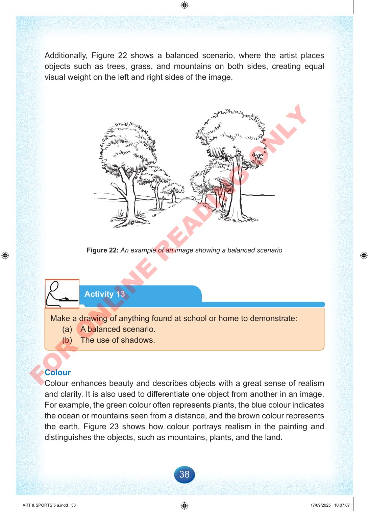

38
Additionally,
Figure
22
shows
a
balanced
scenario,
where
the
artist
places
objects
such
as
trees,
grass,
and
mountains
on
both
sides,
creating
equal
visual
weight
on
the
left
and
right
sides
of
the
image.
Figure
22:
An
example
of
an
image
showing
a
balanced
scenario
Activity
13
Make
a
drawing
of
anything
found
at
school
or
home
to
demonstrate:
(a)
A
balanced
scenario.
(b)
The
use
of
shadows.
Colour
Colour
enhances
beauty
and
describes
objects
with
a
great
sense
of
realism
and
clarity.
It
is
also
used
to
differentiate
one
object
from
another
in
an
image.
For
example,
the
green
colour
often
represents
plants,
the
blue
colour
indicates
the
ocean
or
mountains
seen
from
a
distance,
and
the
brown
colour
represents
the
earth.
Figure
23
shows
how
colour
portrays
realism
in
the
painting
and
distinguishes
the
objects,
such
as
mountains,
plants,
and
the
land.
ART
&
SPORTS
5
a.indd
38
ART
&
SPORTS
5
a.indd
38
17/09/2025
10:07:07
17/09/2025
10:07:07
F
O
R
O
N
L
I
N
E
R
E
A
D
I
N
G
O
N
L
Y